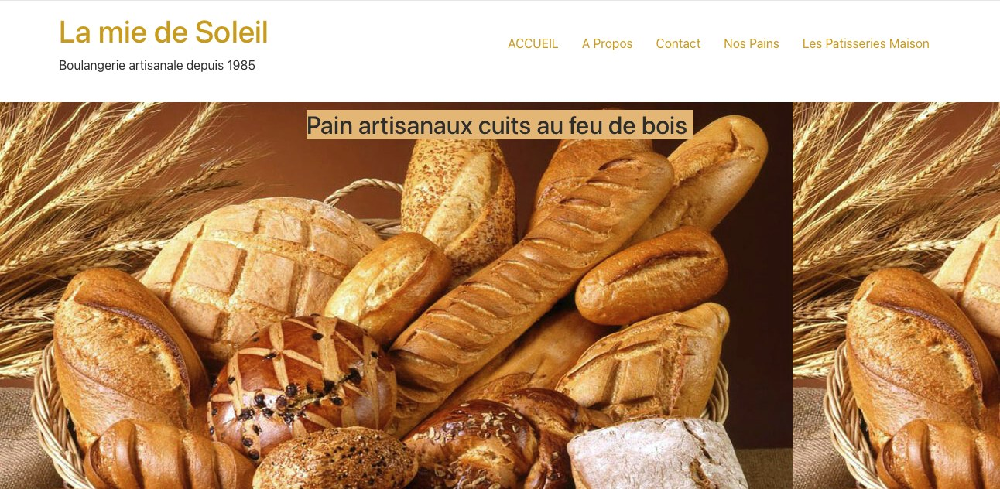
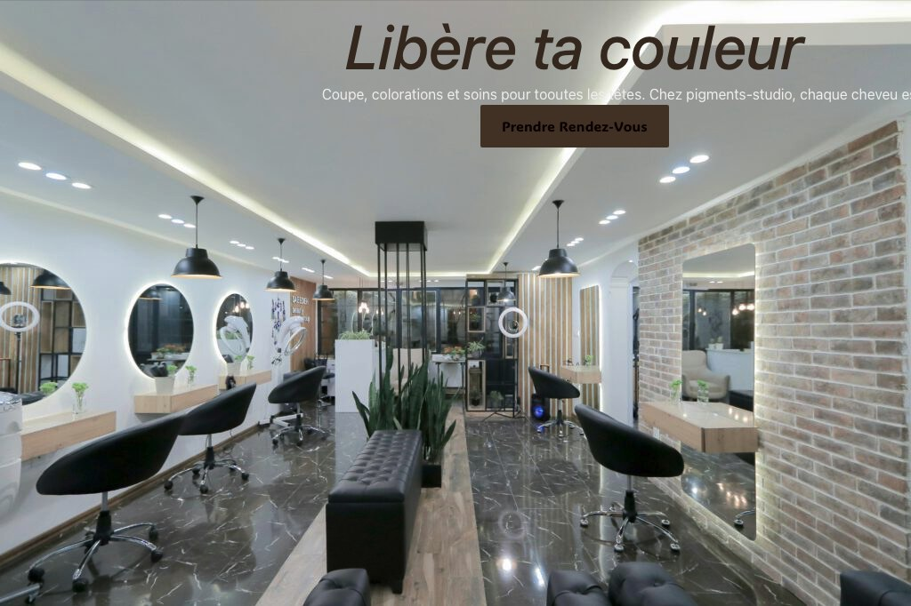

Projet 4 — Sites vitrines WordPress
Deux sites vitrines de démonstration créés avec WordPress et Elementor, en environnement local (Local WP).
- La Mie de Soleil : boulangerie artisanale
- Pigment-Studio : salon de coiffure mixte
- Mise en page avec Elementor, formulaires WPForms, images Unsplash
Captures d'écran

